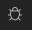
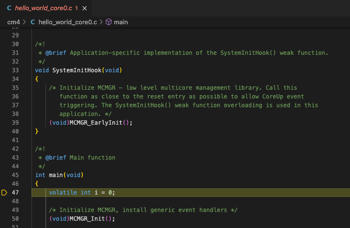
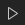

Start debugging
There are two ways to start a debug session:
-
In the CMSIS view , click on the Debug icon . Depending on the number of configurations in your
launch.jsonfile, you will be asked to select a configuration for the debug session. -
In the Run and debug view
 , click the Play icon
next to the selected debug connection . The debug starts with the selected
configuration.
, click the Play icon
next to the selected debug connection . The debug starts with the selected
configuration.
The debugger loads the application program and executes the startup code. When program execution stops (by default at main),
the source code opens at the next executable statement which is marked with a yellow arrow in the editor:

Most editor features are available in debug mode. For example, developers can use the Find command and can correct program errors.
Flash and run
If you do not wish to enter a debug session, you can issue a flash download only, followed by a reset of the device.
In the CMSIS view , click on the Run icon .